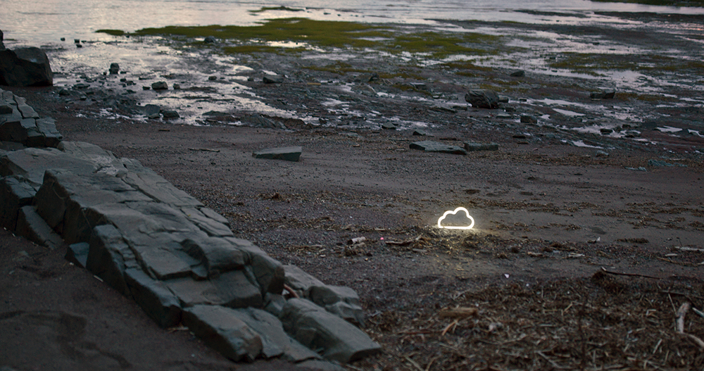

Jessica Arseneau

Untitled (with cloud), 2024
Video, sound stereo, 2:40 min.
2:40 min.
On the bank of a river, with the drama of crashing waves in the background, stands a glowing, cloud-shaped outline. The artificial luminous object seems out of place, contrasting with the almost romantic light of dusk. Sometimes static, other times unstable, the camera seems to bear witness to its persistent and solitary presence.
Made during the artist residency program at Est-Nord-Est.
This project is supported by the New Brunswick Arts Board